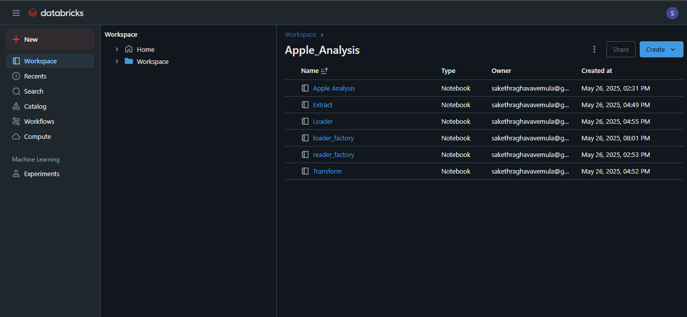
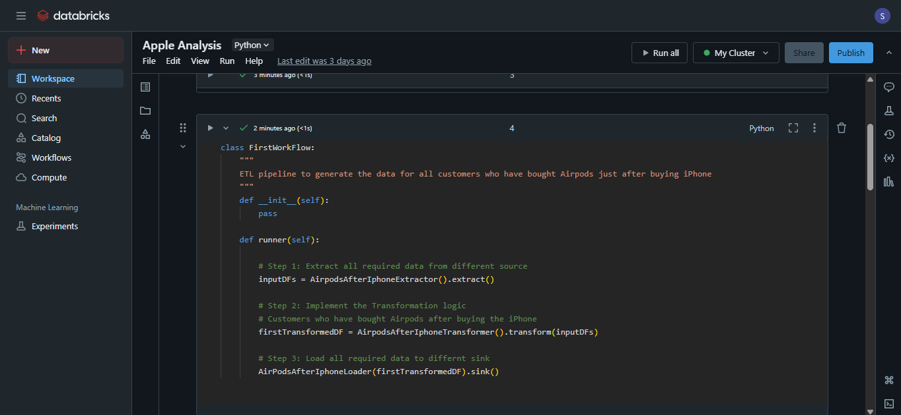
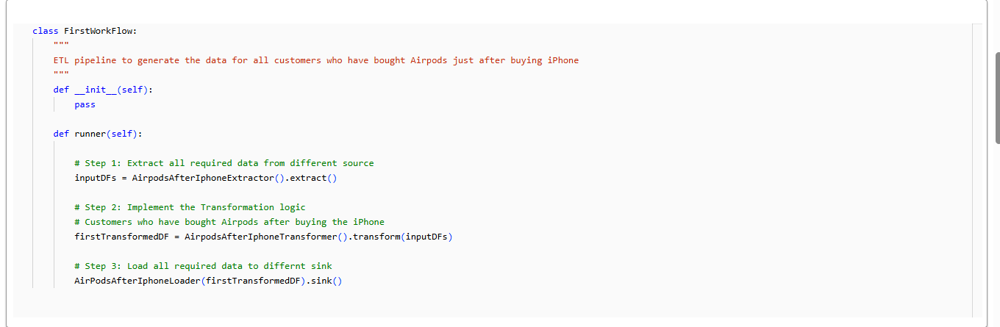
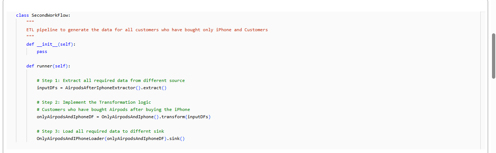
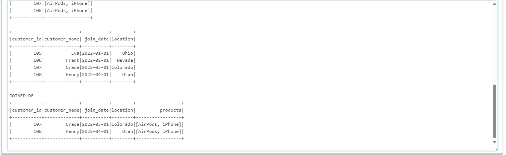

As someone who’s worked with PySpark, Spark SQL, and Snowflake across production analytics pipelines, I wasn’t here to learn the syntax again. I'm not new to databricks, I have worked on it before but I keep going back, exploring tech I know and analyze anything and everything I find, I believe it sharpens my skills, keeps my analytical mind focused mainly, and I love it. This wasn’t about certifications or theory. It was about opening up a real Databricks workspace, running a cluster, and pushing data through the pipeline with clean modular logic, just like I would in any live project.
The code and documentation are available on GitHub: Here.
I structured the notebooks to follow a clean modular architecture—making it easier to manage extraction, transformation, and loading logic independently. This also allowed me to reuse components and test them individually within the Databricks workspace.
To get started, I followed a practical walkthrough from YouTube that demonstrated how to build a real-time analytics pipeline using Databricks Notebooks and Apache Spark. The structure followed the Medallion Architecture, a robust layered approach to organizing data:
My workflow class clearly breaks down the ETL pipeline into three modular steps: extracting the data, transforming it using PySpark, and loading it into a Delta table. This readability makes it easy to debug and extend in collaborative environments.
spark.read.csv(), I loaded the raw transactional data into a PySpark DataFrame. To make exploration easier,
I registered the DataFrame as a temporary SQL view for quick access via SparkSQL.This project follows a modular and layered structure. At a high level, it’s split into: Airflow DAGs, dbt Models, Docker Compose.
Using separate classes for different workflow logic allowed me to customize data transformation paths based on business rules. This flexibility makes it easier to adapt the pipeline to new scenarios without altering the core structure.
The final joined dataset includes enriched customer information and product history. Seeing this come together through clean PySpark transformations and joins was a rewarding part of the process.
While Databricks is often seen as a tool for engineers, it’s incredibly useful for data analysts looking to go beyond dashboards and dive deeper into the data. What stood out to me was the seamless blend of SQL and Python in one environment, ideal for starting with quick queries and moving into complex transformations without context switching. The layered data architecture (Bronze, Silver, Gold) provided full visibility into how data evolves, not just the end result. Add in collaborative notebooks, scalable compute, and built-in visualizations, and Databricks becomes the perfect bridge between traditional analysis and modern data engineering.
If you're already comfortable with tools like PySpark or SQL and want to take your data workflow skills further, Databricks is a natural next step. This project was less about learning something new and more about reinforcing core skills in a platform that mirrors real-world production environments. My advice is to start small and get hands-on. Set up a Databricks workspace, choose a dataset you're curious about, and build something end-to-end. Focus on structuring your pipeline cleanly, using modular notebooks, and applying both SQL and Python where they make the most sense. Even a simple project can teach you a lot when you approach it with a real-world mindset. Pay attention to data quality, transformation logic, and how your code would scale. Databricks makes this process intuitive while giving you the power to grow into more complex workflows.